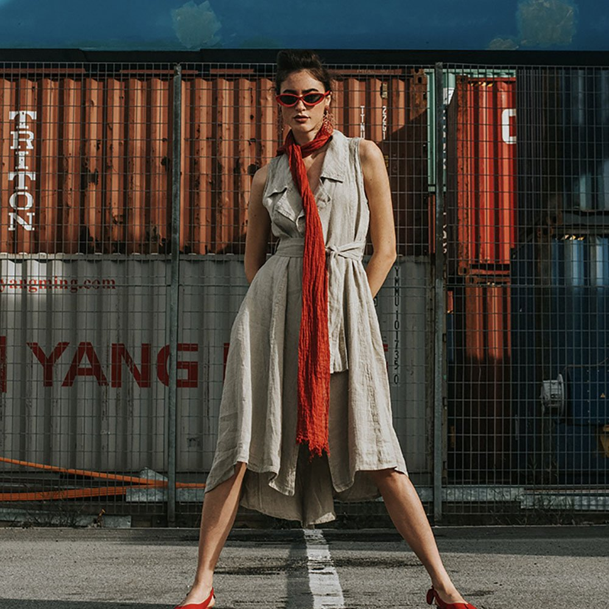
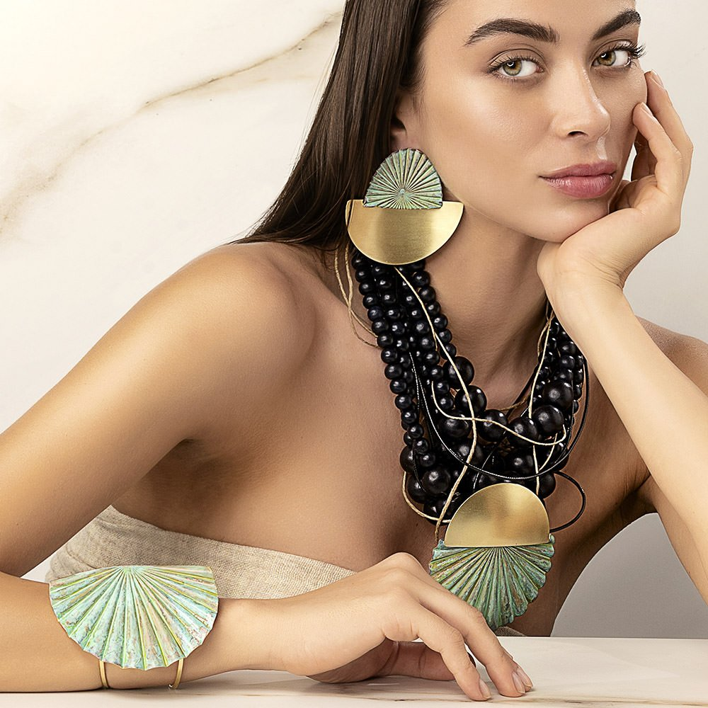

| ABOUT | BRAND | CONTACT | SHOP |
| ABOUT | BRAND | CONTACT | SHOP |
At the end of the 70s the Rispoli family opened a small workshop.
Their creations were inspired by the past with light gauze fabrics and Neo-romantics laces; the colors were those of their land.
After more than thirty years, this style evolved and adapted to the new and demands of fashion, but always respecting taste that distinguishes, Moda Positano style in the world.
Today we prefer natural fabrics such as linen, silk and cotton enriched by precious embroideries and prints read. not to mention the glam touch of sober and refined lines.
Mrs. Antoniette and her daughter Fabiana personally take care of the different lines that launch on time every season, appreciated and sold all over the world.
Blitz Boutique in Positano is a company that combines solid elegance, taste and refinement; attentive to the fashion of the moment, using innovative fabrics and coordinates them with special accessories all in full compliance with the MADE IN ITALY.
Since 1965, La Bottega di Brunella continues to make items of clothing for women, men and children with the same love and originality of yore, also because Vito and Brunella have managed to instill their enthusiasm to their children Cristina, Annamaria, Baldo, Antonio and Francesco. The typical family management warmth has fascinated Ursula Andress, Zeffirelli and now it is fascinating people like Zucchero, Eleanora Brigliadori and Enrica Bonaccorti.
From the cotton gauze for a neoromantic style, to delavé jeans with handmade embroideries; from the bemberg tissue, typical of the Thirties, to the optical black/white contrast. La Bottega di Brunellaexplores and interprets the themes of fashion style: the day after style that gives way to the tropics cheerfulness, the Futurism with Lycra and even linen, fabric of 2000, which is also used to create accessories.
Unique creations with semi-precious stones, designed and produced by Mrs. Vassou and her specialized staff. Made a very strong impression entering the Greek market, due to their excellent quality, perfect finish, but also because of their especially affordable prices. The appearance of the first whole collection of KATERINA VASSOU JEWELLERY, in the very demanding Greek market, took place back in the year 2004.
The success of the show, and moreover the need of Mrs.Vassou to create new trends in the world of handmade jewellery, led to the opening of the first exclusive boutique in the year 2015, as well as the simultaneous establishment of the company.
Goal of the company is, through a wide variety of new trends and creations, to make every woman shine even more, full of confidence and style. Our vision is, to become a fashion brand, source of trust and inspiration, for women all around the world.